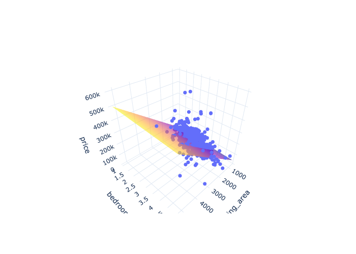
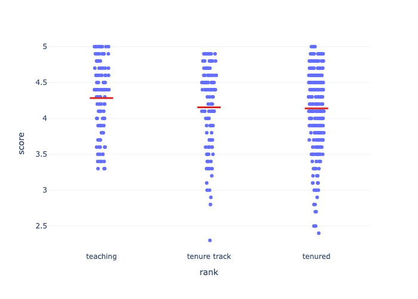
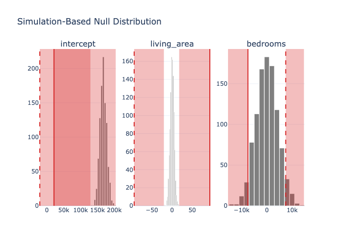

Regression¶
The regression helpers turn a fitted statsmodels
model into tidy polars tables — the analog of R moderndive’s
get_regression_table() / get_regression_points() / get_regression_summaries().
Fit models with statsmodels’ formula API, then tidy them:
import polars as pl
import statsmodels.formula.api as smf
import moderndive as md
from moderndive import (
get_regression_table, get_regression_points, get_regression_summaries, get_correlation,
)
houses = md.load_saratoga_houses()
model = smf.ols("price ~ living_area + bedrooms", data=houses.to_pandas()).fit()
Coefficient table (with confidence intervals)¶
get_regression_table(model)
| term | estimate | std_error | statistic | p_value | lower_ci | upper_ci |
|---|---|---|---|---|---|---|
| str | f64 | f64 | f64 | f64 | f64 | f64 |
| "intercept" | 20986.094 | 6816.251 | 3.079 | 0.002 | 7611.128 | 34361.06 |
| "living_area" | 93.842 | 3.109 | 30.183 | 0.0 | 87.741 | 99.943 |
| "bedrooms" | -7483.095 | 2783.531 | -2.688 | 0.007 | -12944.988 | -2021.203 |
Change the confidence level with conf_level= (e.g. 0.99).
Fitted values & residuals¶
get_regression_points(model).head()
# columns: ID, price, living_area, bedrooms, price_hat, residual
| ID | price | living_area | bedrooms | price_hat | residual |
|---|---|---|---|---|---|
| i64 | i64 | i64 | i64 | f64 | f64 |
| 1 | 142212 | 1982 | 3 | 184531.942 | -42319.942 |
| 2 | 134865 | 1676 | 3 | 155816.245 | -20951.245 |
| 3 | 118007 | 1694 | 3 | 157505.404 | -39498.404 |
| 4 | 138297 | 1800 | 2 | 174935.767 | -36638.767 |
| 5 | 129470 | 2088 | 3 | 194479.21 | -65009.21 |
Model-fit summaries¶
get_regression_summaries(model)
# r_squared, adj_r_squared, mse, rmse, sigma, statistic (F), p_value, df, nobs
| r_squared | adj_r_squared | mse | rmse | sigma | statistic | p_value | df | nobs |
|---|---|---|---|---|---|---|---|---|
| f64 | f64 | f64 | f64 | f64 | f64 | f64 | i64 | i64 |
| 0.578 | 0.578 | 2.5071e9 | 50071.187 | 50142.395 | 723.229 | 0.0 | 2 | 1057 |
Correlation¶
get_correlation(houses, "price ~ living_area") # ≈ 0.759
# or: get_correlation(houses, x="living_area", y="price")
| cor |
|---|
| f64 |
| 0.758674 |
Pass several predictors on the right-hand side to get one correlation per
predictor (long by default; wide=True for one column each):
get_correlation(houses, "price ~ living_area + bedrooms + bathrooms", quiet=True)
| predictor | cor |
|---|---|
| str | f64 |
| "living_area" | 0.758674 |
| "bedrooms" | 0.462755 |
| "bathrooms" | 0.64952 |
Logistic & other GLMs¶
The regression helpers also accept a fitted glm() model. For a logistic
regression, get_regression_points() returns fitted probabilities and
get_regression_summaries() returns a GLM-shaped summary (deviance, AIC, BIC, …).
Pass exponentiate=True to get_regression_table() for odds ratios:
import statsmodels.api as sm
evals = md.load_evals().with_columns((pl.col("gender") == "male").cast(int).alias("is_male"))
logit = smf.glm("is_male ~ score + age", data=evals.to_pandas(),
family=sm.families.Binomial()).fit()
get_regression_table(logit, exponentiate=True)
| term | estimate | std_error | statistic | p_value | lower_ci | upper_ci |
|---|---|---|---|---|---|---|
| str | f64 | f64 | f64 | f64 | f64 | f64 |
| "intercept" | 0.003 | 1.029 | -5.611 | 0.0 | 0.0 | 0.023 |
| "score" | 1.954 | 0.188 | 3.561 | 0.0 | 1.351 | 2.825 |
| "age" | 1.071 | 0.011 | 6.292 | 0.0 | 1.049 | 1.095 |
get_regression_summaries(logit)
| mse | rmse | deviance | null_deviance | aic | bic | log_lik | df_residual | df_null | nobs |
|---|---|---|---|---|---|---|---|---|---|
| f64 | f64 | f64 | f64 | f64 | f64 | f64 | i64 | i64 | i64 |
| 0.219 | 0.468 | 578.298 | 630.296 | 584.298 | 596.711 | -289.149 | 460 | 462 | 463 |
3D regression plane¶
plot_3d_regression() draws an interactive 3D scatter of an outcome against two
numeric predictors, with the fitted regression plane overlaid (a plotly figure):
from moderndive import plot_3d_regression
plot_3d_regression(houses, "price ~ living_area + bedrooms")

Visualizing models¶
Two ports of R moderndive’s ggplot helpers, both dual-engine:
from moderndive import gg_parallel_slopes, gg_categorical_model
evals = md.load_evals()
# Parallel-slopes model: one common slope, a separate intercept per group
gg_parallel_slopes(evals, response="score", explanatory="age", by="gender") # plotly
gg_parallel_slopes(evals, response="score", explanatory="age", by="gender",
engine="plotnine")
# Regression with a single categorical predictor
gg_categorical_model(evals, response="score", explanatory="rank")

For the plotnine engine you can also drop the parallel-slopes lines onto your own
ggplot with geom_parallel_slopes().
Inference for regression coefficients¶
fit() runs the regression on every bootstrap/permutation replicate, giving a
distribution per coefficient. Pair it with visualize_fit and per-facet
shading:
from moderndive import specify
from moderndive.infer.viz import visualize_fit
from moderndive import shade_confidence_interval, shade_p_value
f = "price ~ living_area + bedrooms"
obs_fit = houses.specify(formula=f).fit()
# Bootstrap distribution of each coefficient → per-term CIs
boot_fit = houses.specify(formula=f).generate(reps=1000, type="bootstrap", seed=1).fit()
boot_fit.get_confidence_interval(level=0.95) # one row per term
visualize_fit(boot_fit) + shade_confidence_interval(boot_fit.get_confidence_interval())
# Null distribution → per-term p-values, each facet shaded at its own estimate
null_fit = (
houses.specify(formula=f).hypothesize(null="independence")
.generate(reps=1000, type="permute", seed=1).fit()
)
null_fit.get_p_value(obs_stat=obs_fit, direction="two-sided")
visualize_fit(null_fit) + shade_p_value(obs_stat=obs_fit, direction="two-sided")

Per-facet shading works in both engines: shade_p_value / shade_confidence_interval
accept the observed FitResult or a term-keyed table, and each facet is shaded
from its own value.